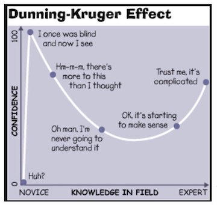
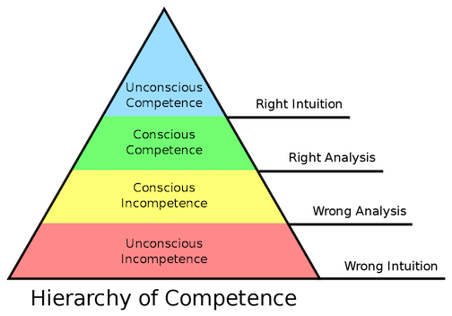
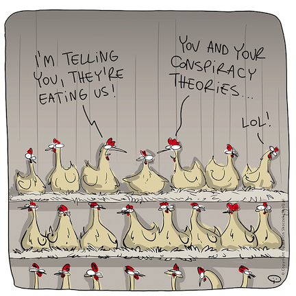

Detection of the Higgs-Boson, gravitational waves, the creation of quantum computers, just to name a few. But while ideas move to uncover the secrets of the universe, others move in decidedly different directions.
Conspiracy theories sprout all over the internet like weeds. Generally unnoticed until it’s too late. It’s easy for most people to dismiss them as being “dumb,” or “ill-informed,” but the reality is they are only human, like you and me, with the same capabilities of thought as everyone else. If you look a little deeper, you will find we have more similarities than differences.
We all fall victim to our own minds sometimes. Recognizing our own brain’s weaknesses is the best way to defend ourself from that. Everyone believes in one at some point. Even the world’s preeminent scientists. (That later) Chances are you currently believe at least one.
There’s no way we can eliminate them entirely, our minds are meaning-factories, it’s our nature. But with a little forethought, we can at least make sure the worst ones go extinct.
Why Do We Believe Them?
There are several factors:
1. Confidence + Unsupervision

Also known as Dunning-Kreuger Effect, operating together with the hierarchy of competence. These are famous biases where people with low ability tend to overestimate their ability, because of their inability to recognize their own lack of ability. Unskilled and Unaware of It, was the title of Kreuger & Dunning’s famous paper.

And then there is the Hierarchy of Competence, which goes for all skills. Most people are unconscious of their incompetence, and this applies to almost every human skill, which includes reading about news and current events. People assume because they read every day, they can see the world, but there is no correcting mechanism to supervise if you are right or wrong. This plus confidence will lead people to assume they are right about every conclusion they come to.
2. Sometimes They Are True
There are many examples of this, just from my home country of America: Watergate, Project Sunshine, MK-Ultra, and NSA mass surveillance. The fact that some are true may lead others to a very rational conclusion that others can true as well.

3. Unfalsifiable
Einstein is famously quoted as saying:
No amount of experimentation can ever prove me right; a single experiment can prove me wrong.
Faisifiability is a core scientific principle that states, science only needs one good (repeatable) experiment in order to disprove an entire scientific theory.
The problem with most conspiracy theories is that many of them are unfalsifiable, with no way to disprove them. But this isn’t the case with all of them. Many have been and can be easily falsified by science, such as Flat Earth Theory, and Vaccines Cause Autism. These easily falsifiable theories will hold weight from a segment of the population, due to a lack of understanding of confirmation bias. But, falsifying a fact and falsifying a belief are two separate things.
4. Confirmation Bias & the YouTube Algorithm
All humans have a tendency to search for and interpret information that confirms their existing beliefs. Once you believe something, it becomes part of your personality, and difficult to dislodge. This is feeded into by the YouTube Algorithm. Designed to keep you on the platform for a long time, it will feed you more information you are likely to click on, further solidifying your beliefs.
Three Scientific Explanations
1. Evolutionary Theory
As early humans, our lives were often violent and dangerous. The entertainment we enjoy today, such as horror movies, are a direct result of dangers we used to individually face, which is why we are always attracted to them, to try and imagine ourselves in those situations.
Horror movies use the same tricks that early humans face. Our observations vs. our reality. Most times, our observations and reality line up. But other times, not so, and we call this error.
The error comes in two forms, scientists call them: Type I and Type II. Imagine we ourselves are in a horror movie. Type II Error occurs when, for example, we are in a dark room, and look into the mirror. We expect to see a ghost. Oooooooo! So we look, and OMG! We see.. ourselves. No ghost. Well that’s embarassing, but everything’s fine. Type I Error is when we think, hey there’s no ghost. So whatever. We look in the mirror, and BAM! The girl from The Ring comes out and kills us. We’re dead. Oh crap. Type I Errors are called jump scares in the film industry. People think of it as just a cheap trick, but the evolutionary equivalent of jump scares have real, serious consequences, such as being eaten by a crocodile.
As humans, we are constantly on the lookout to avoid a Type I Error. Better safe than sorry. It’s better to be mentally prepared for a threat that may not exist, rather than be unprepared for one that does.
2. Pareidolia
Pareidolia is the tendency of perceiving stimulus, of a pattern or object, as something known to the observer.
From the Greek word para (“alongside”), and eidolon (“image, shape”). Everytime you see an elephant in the clouds, or a man’s face on the moon, that’s your pareidolia speaking. All humans have this, and it’s not confined to humans, even computers being trained in pattern recognition.
This is a cognitive bias that all humans are susceptible to. The tendency to find patterns in the chaos, even if those patterns don’t exist. when Jesus appears on a piece of toast, it’s a holy sign. When a face appears on the Martian surface, it’s the aliens. But what is the sign when you show them the map of Italy, and you see a boot?
3. Probability
Probability is the scientific way of dealing with uncertainties.
In a famous 2013 paper, “Measuring Belief in Conspiracy Theories” a physicist tried to calculate the likelihood of conspiracy theories based on the total number of people required to keep it secret.
Which led to the creation of the a Generic Conspiracist Beliefs scale. His findings?
- Moon Landing: 411,000 people ending in 3.68 years
- Climate Change: 405,000 people ending in 3.70 years
- Vaccination: minimum 22,000 people (without drug companies) ending between 3.15~34.78 years
- Cure for Cancer: 714,000 people ending in 3.17 years
Flat Earth wasn’t studied, but just by thought, you can tell it’s probably the least likely. You’d need the cooperation of all major governments, airlines, pilots, Armed Forces, Aerospace Companies, NASA, SpaceX, and not to mention the entire scientific community.
Judging the likelihood is similar to what we should be doing as humans, but many of us reduce these beliefs to absolute truth or falsehood.
This is called the Bias of Absolutes. If someone else has coined this already (which is entirely a likely possibility), I will correct this in the future.
We tend to think in terms of absolute thinking, but nothing at all is 100% absolute. Even the laws of physics can be up-ended in the future.
It should be noted that probability can work to the advantage of some conspiracy theories. In 2003, Nick Bostrom, a famous Oxford Philosopher, successfully convinced the entire scientific community, just by using Bayesian Probability and some key assumptions, that we are all likely to be living in an artificial simulation. This is the famous simulation hypothesis.
Is so and so conspiracy theory true?
Like all things, it depends on the factors. Just remember the Bias of Absolutes. All theories are never 100% certain, just varying degrees of likelihood. Evidence > anecdotal. Science > your YouTube video. As long as you are aware of your own cognitive biases, it can be fun to entertain the possibilities. The danger is when we take them too seriously at the expense of proven science, such as in the case of Anti-Vaxxers, or the drinking of Bleach during the COVID-19 pandemic. The wrong information provided to vulnerable people can lead to serious harm, even death.
But, for most, entertaining conspiracy theories is enjoyable in the same way people like to look at optical illusions. Here are some popular conspiracy theories:
-
The Olsen Twins are just one person moving very quickly back and forth
-
Dogs don’t like fetching the ball, but they think we really like throwing it so they keep bringing it back.
-
Disney made the movie Frozen so when you search for Disney Frozen you don’t read about a cryogenically frozen Disney
-
Rocks are soft and squishy, but they get nervous and tense up when we touch them
-
Dean Koontz’s books are written by the golden retriever, and the man is an actor paid by the publishing company, because no one would take a dog writer seriously
Further Reading: https://onlinelibrary.wiley.com/doi/pdf/10.1111/pops.12568 https://www.sciencealert.com/equation-shows-that-most-big-conspiracies-would-have-been-revealed-by-now https://doi.org/10.1371/journal.pone.0151003